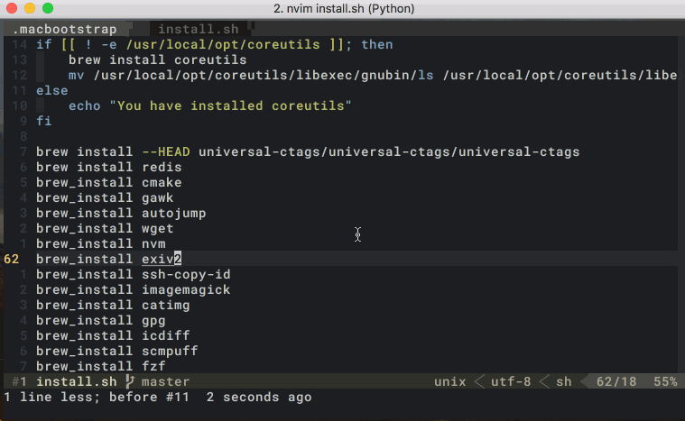
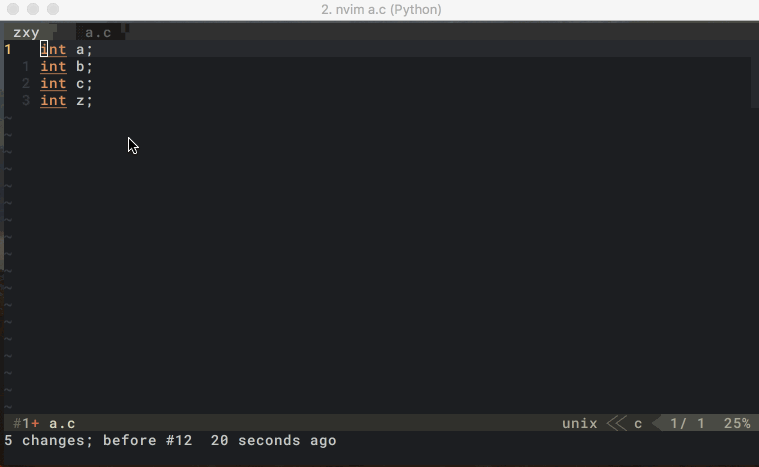

文本编辑
阅读完前两章，相信读者以及能够在 Vim 中自如的移动光标了，不过我们的编辑方式还比较简陋，只能进入编辑模式，像往常一样逐个字符的输入和删除，本节会介绍一些更高级的操作。
基础文本编辑
在普通模式下，按下 o会快速进入输入模式，并且在下一行进行编辑。如果按下大写的O会在上一行编辑：

如果想在当前光标位置开始编辑，可以按下 a 或 i，前者表示在光标所在字符的右侧开始编辑，后者表示在左侧开始编辑。
我们还可以用 I 前往行头开始编辑，或者用 A 跳转到行尾编辑。
按下 dd 可以快速删除一行，此时被删除的那一行会保存在 Vim 的剪贴板中。这一点类似于系统的 Ctrl + X 剪切，我们可以通过配置 Vim 来选择是否要与系统共享剪贴板。
普通模式下，按下 p 可以把 Vim 剪贴板中的内容再拷贝出来，注意这里总是会拷贝到下一行或者光标的右侧。因此如果想交换当前行和下一行，可以输入：ddp，这是因为当前被删除的行会复制到下一行的下面。
如果只想复制，不想删除，可以把命令 p 换成 y（表示：yank）。如果想删除后进入编辑模式，可以把 p 换成 c，比如 cc 表示删除当前行并且从行首开始编辑。
注意这里的
p、c、y、d都是动作，和前面说的j、k、l、h、w、b、e一样，都支持用数字来重复，比如2dd 表示删除两行。
撤销与重做
如果想撤销上一次修改，可以用 u，类似于系统的 Command + z 快捷键。
如果想重做，可以用 Ctrl + R，类似于系统的 Command + Shift + z 快捷键。
文本对象
Vim 的文本对象能极大幅度的提高编辑效率，也是 Vim 进阶之路上必须要掌握的概念。
对于上文介绍的 c、d、y 这些动作来说，作为单独的动作用处并不大，无非就是连续按两下对当前行做一些操作，而文本对象则扮演了语法中名词的概念，提供了更细粒度的操作。比如以下几种操作：
diw： 删除一个单词（word）ca"：删除双引号内的文本并编辑（包含双引号自身）yi"：复制双引号内的文本（不包含双引号自身）dtx：向右删除，直到遇到遇到字符 x（不包含 x）
以上三个命令都属于同一大类操作，它们普遍遵循以下模式：
命令 = 动作 + 数量 + 描述词 + 文本对象
这类命令通常由三个到字母组成：
- 第一个字母是动词，包括上文介绍的
c、y、d等，表示你这个命令的主要目的。 - 第二个字母是可选的，表示重复几次
- 第三个字母是对范围的描述，比如
a表示包含边界，i不包含，t表示向右查找，T向左。 - 第四个字母是文本对象，可以是内容的字面量描述，比如
"、'、<、`、{、(等等，也可以是固定单词
这里详细介绍下文本对象，除了字面量外，以下单词有特定的含义：
- p：表示段落
- s：表示句子
- w：表示单词
- t：特指标签，一定要具备
<xx>abc</xx>的结构，此时的t代表 abc
对于字面量的文本对象，除了
"、' 和这三个引号外，另外几个括号都可以用b来表示（block），这样就不用区分大中小和尖括号了。
搜索与替换
使用 / 进行搜索，我的搜索默认是忽略大小写的，使用 /pattern\C 可以强制匹配大小写。
使用 :范围s/oldpattern/newpattern/替换模式 可以进行替换。
如果我们已经进行过搜索，那么 oldpattern 可以省略不写，默认就是上一次的搜索内容。
最常用的范围是 begin,end，其中 begin 是开始行号，end 是结束行号，表示在第 begin 行到第 end 行之间进行替换，比如：:1,10s/hello/hallo/g 表示把第 1 - 10 行中所有的 hello 换成 hallo。
范围还有一些简单的表示法：
.,10表示当前行到第 10 行，点表示当前行.,$表示当前行到文件末尾，美刀符号表示文件结尾%表示1,$，也就是整个文件，比如全文替换通常写成:%s/old/new/g.,+2表示当前行和接下来的两行
上文反复提到的字母 g 其实是一种替换模式，表示替换这个范围内所有出现的 oldpattern，如果不写则只替换第一次出现。常用的模式还有 c，表示替换需要确认（Confirm），i 表示大小写不敏感，I 表示大小写敏感。
如果需要替换光标停留的单词，并不需要搜索，或者手动输入它。直接使用 <Leader + s> 即可。接下来只需要输入替换后的内容和替换模式。这种替换是全局替换。
大小写切换
以下是几个常用的，切换大小写的命令
guu当前行全部小写，gUU当前行全部大写~当前光标下的字符切换大小写,3~当前光标下后面三个字符切换大小写guiw当前单词全部小写，gUiw当前单词全部大写g~iw当前单词每个字符大小写交换
列操作
如果有多行文本要做相同的操作，可以借助 Vim 中列操作的概念来快速完成，举一个实际实际的例子，假设有以下这段代码：
int a;
int b;
int c;
// ...
int z;
有一天我们发现 int 不是很准确，要改成：
uint8_t a;
uint8_t b;
uint8_t c;
// ...
uint8_t z;
难道还要手动复制粘贴不成？请看列操作大法：
- 首先按下
Ctrl + V进入列操作模式 - 然后用
j、k进行跳转，表示你要操作多少行 - 这时你对每一行的操作都会应用到所有行上，比如输入
ec，删除单词进入编辑模式 - 输入
uint_8，按下Esc退出编辑，Vim 会自动应用到所有行上。

宏
列操作的本质是多行同时操作，如果每一行的操作类似，但都有细微差别，就需要引入 录制、回放 的概念了。此时可以用 Vim 中的宏。
一个典型的场景是，我们在写 Markdown：
1. 第一条
2. 第二条
3. 第三题
...
10. 第十条
写着写着突然发现，第一条和第二条中间还要加一条，左边的序号就不好处理了，因为我们要把原来的序号 2 到 10 分别加一。
在 Vim 中，我们“只”需要输入 qajC-aq6@a，相信你一定很想打我，这特么一点也不简单啊。别急，拆开来看：
qa（q 表示开始录制宏，a 表示录制内容存储在寄存器 a 中）
j（向下一行）
Ctrl + a（数字加一）
q（再按一次 q 表示结束录制）
6@a（把存储在寄存器 a 中的宏执行 6 次）
是不是感觉 So Easy（录像中我用的是大写 Q，因为小写 q 被映射了）：